Table des matières
1 Connexion à la plateforme
Pour accéder à la plateforme KLASSCI LMS, ouvrez votre navigateur et rendez-vous à l'adresse fournie par votre établissement.
Page de connexion
Vous arrivez sur la page d'authentification. Saisissez vos identifiants (login et mot de passe) fournis par l'administration.
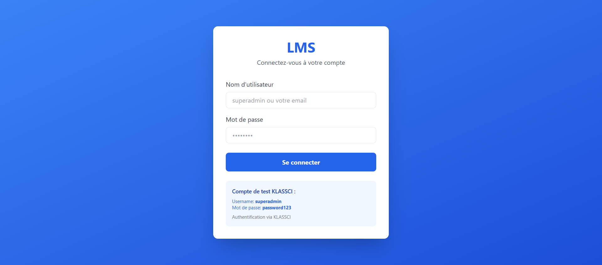
Saisie des identifiants
- Entrez votre nom d'utilisateur dans le premier champ
- Entrez votre mot de passe dans le second champ
- Cliquez sur le bouton "Se connecter"
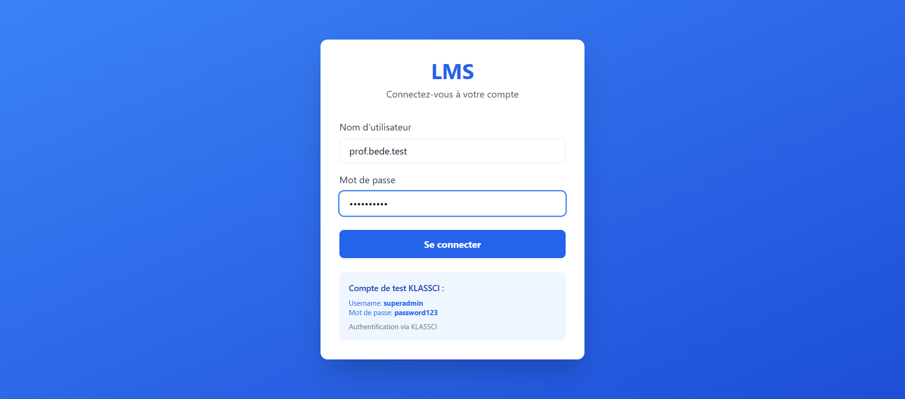
2 Tableau de bord
Après connexion, vous accédez à votre tableau de bord. C'est votre page d'accueil qui vous donne une vue d'ensemble de votre activité.
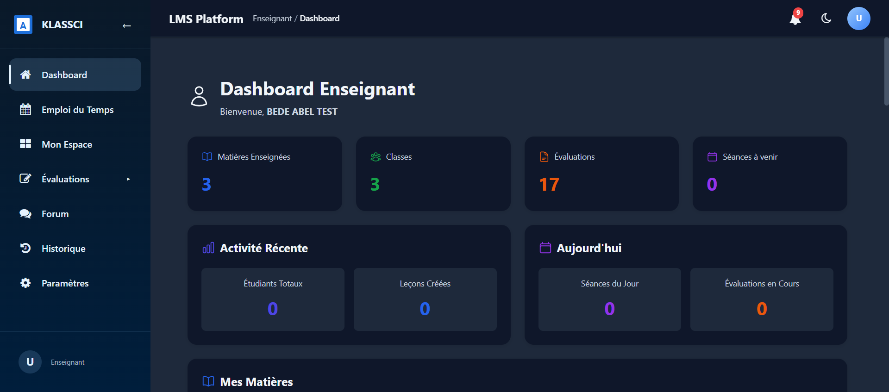
Le tableau de bord affiche :
- Vos matières : liste des matières que vous enseignez
- Vos classes : les classes qui vous sont assignées
- Évaluations récentes : aperçu de vos dernières évaluations
- Statistiques : nombre total de matières, classes et évaluations
3 Emploi du temps
L'emploi du temps affiche toutes vos séances planifiées sous forme de calendrier interactif.
Vue mensuelle
Par défaut, le calendrier s'affiche en vue mensuelle. Chaque séance est représentée par un bloc coloré.
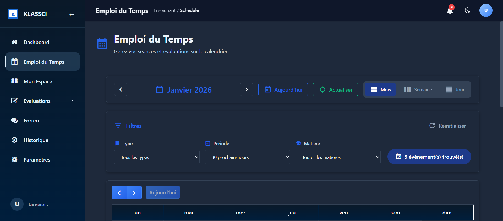
Vue hebdomadaire
Vous pouvez basculer en vue semaine pour voir le détail de chaque journée avec les horaires précis.
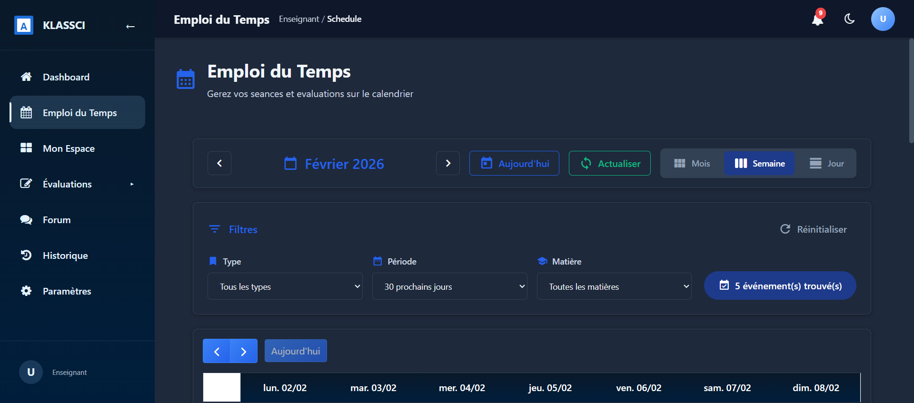
4 Gestion des séances et visioconférence
En tant qu'enseignant, vous pouvez activer la visioconférence pour vos séances et démarrer un cours en direct.
Étape 1 : Consulter les détails d'une séance
Cliquez sur une séance dans votre emploi du temps. Une fenêtre modale s'ouvre avec les informations de la séance.
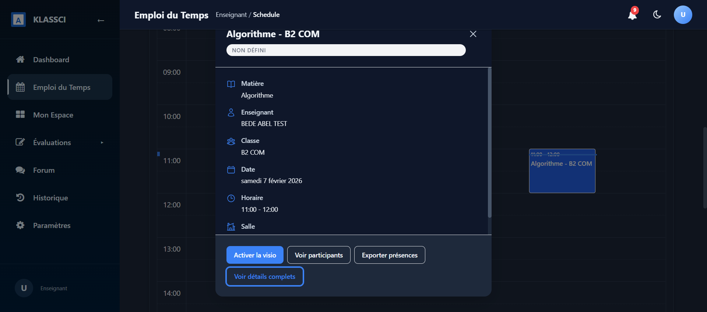
Étape 2 : Activer la visioconférence
Si la visio n'est pas encore activée, cliquez sur le bouton "Activer la visio". La séance passera en mode "Visio activée".
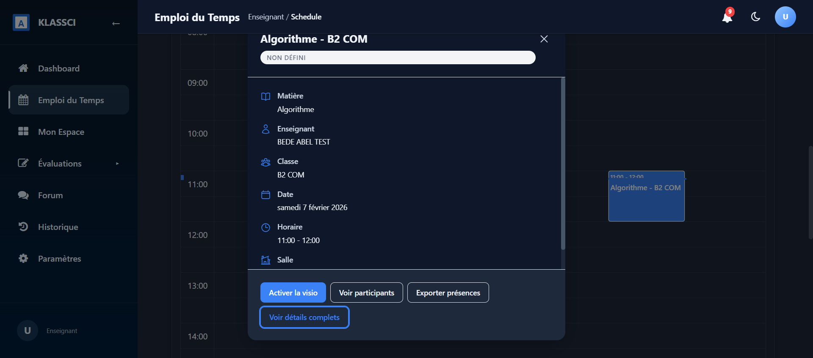
Étape 3 : Page de détails avec section visio
En cliquant sur "Voir les détails", vous accédez à la page complète de la séance, incluant la section visioconférence.
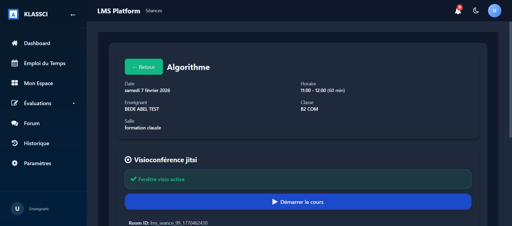
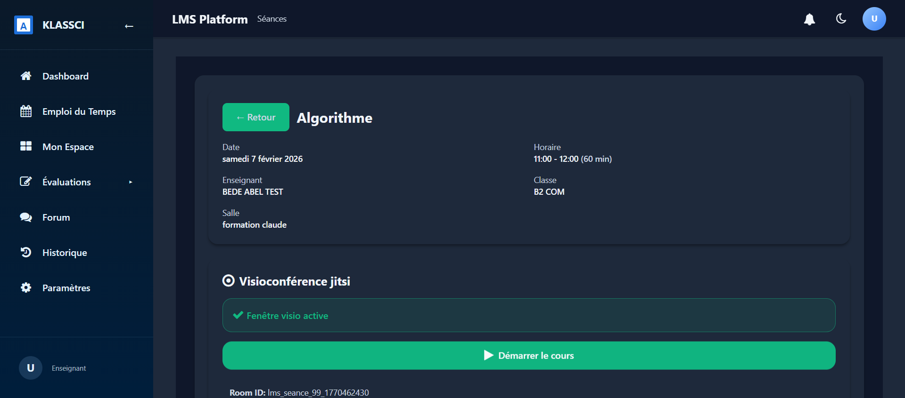
Étape 4 : Démarrer le cours en direct
Cliquez sur "Démarrer le cours" pour lancer la visioconférence. Le statut passe à "COURS EN DIRECT".
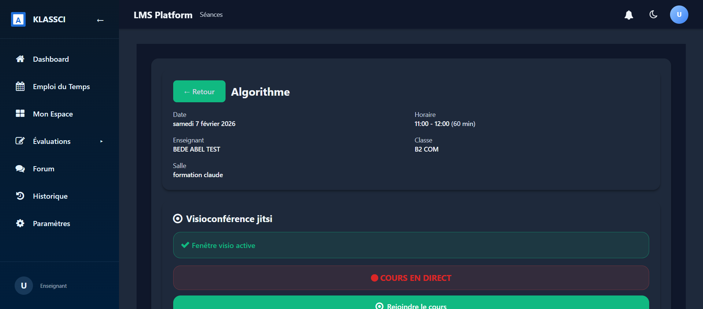
5 Mon Espace (Classes, Matières, Leçons)
La section « Mon Espace » est votre espace central pour gérer vos classes, matières et créer des leçons complètes pour vos étudiants.
5.1 Vue d'ensemble
La page d'accueil de Mon Espace affiche 3 cartes principales :
| Carte | Description |
|---|---|
| Mes Classes | Les classes auxquelles vous enseignez (avec le nombre total) |
| Mes Matières | Les matières que vous enseignez (avec le nombre total) |
| Mes Leçons | Les leçons que vous avez créées (avec le nombre total) |
Un aperçu rapide en bas affiche vos séances à venir, évaluations actives et nombre total d'étudiants.
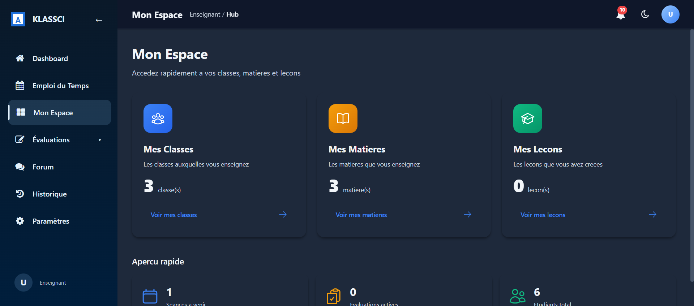
5.2 Consulter vos leçons
En cliquant sur « Mes Leçons », vous accédez à la liste complète de vos leçons avec des filtres :
- Par matière : filtrer les leçons d'une matière spécifique
- Par statut : Publiée, Brouillon, Archivée
- Par type : Vidéo, Document, Quiz, TP, TD
Des compteurs en haut indiquent le nombre total, les leçons publiées, les brouillons et les archivées.
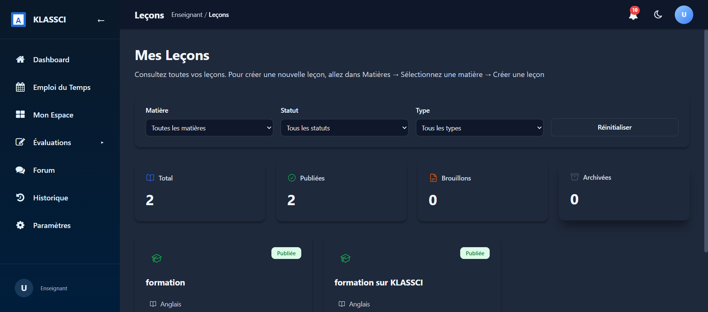
5.3 Gérer vos matières
En cliquant sur « Mes Matières », vous voyez toutes vos matières avec pour chacune :
- Le coefficient de la matière
- Le nombre de leçons publiées
- Le nombre de séances
- Le nombre d'évaluations
- Un bouton « Gérer la matière » pour accéder aux détails
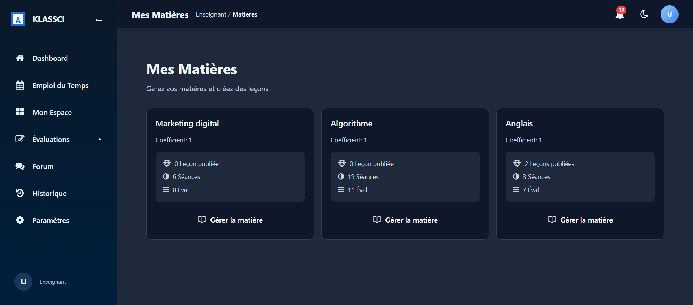
5.4 Créer une nouvelle leçon (étape par étape)
Pour créer une leçon, suivez ces étapes :
Étape 1 : Accéder à la matière
- Allez dans Mon Espace → Mes Matières
- Cliquez sur « Gérer la matière » pour la matière souhaitée
- Dans la page de détails, cliquez sur le bouton « Nouvelle leçon » (en haut à droite)
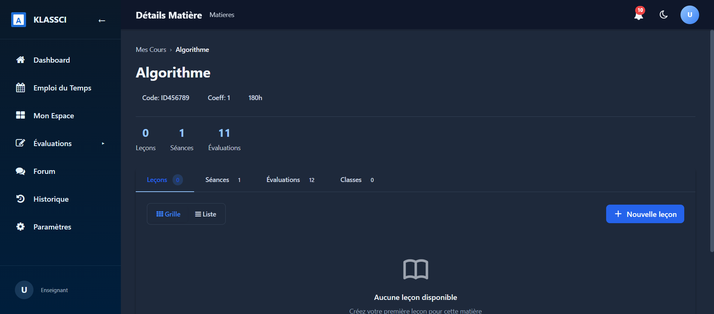
Étape 2 : Remplir le formulaire de création
Un formulaire modal apparaît avec les champs suivants :
| Champ | Obligatoire | Description |
|---|---|---|
| Titre de la leçon | Oui * | Nom de la leçon (ex: « Introduction aux boucles en Python ») |
| Description | Non | Résumé court du contenu (2-3 phrases) |
| Prérequis | Non | Connaissances nécessaires pour suivre la leçon |
| Niveau de difficulté | Oui * | Débutant, Intermédiaire ou Avancé |
| Objectifs pédagogiques | Non | Ce que l'étudiant saura faire après la leçon |
| Durée estimée (minutes) | Non | Temps nécessaire pour compléter la leçon (5-600 min) |
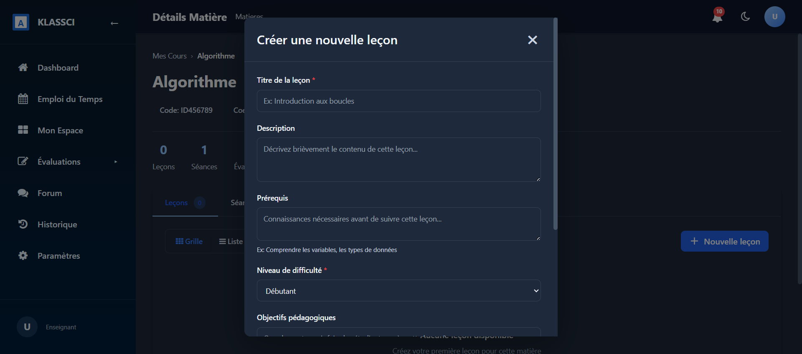
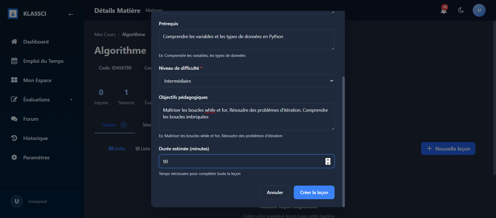
5.5 Ajouter des chapitres à votre leçon
Après la création de la leçon, vous êtes automatiquement redirigé vers la page de gestion des chapitres. C'est ici que vous ajoutez le contenu réel de votre leçon.
En haut de la page, vous voyez :
- Le titre et la description de votre leçon
- Le statut actuel (Brouillon par défaut)
- Un bouton « Prévisualiser » pour voir la leçon comme un étudiant
- Un bouton « Publier la leçon » pour la rendre visible aux étudiants
Chaque chapitre comprend :
- Un titre : nommez votre chapitre (ex: « Les boucles While »)
- Un type de contenu : choisissez parmi 7 types différents
- Le contenu : selon le type choisi, un éditeur spécifique apparaît
5.6 Les 7 types de contenu disponibles
Chaque chapitre peut contenir un type de contenu différent, ce qui permet de varier les supports pédagogiques :
| Type | Description | Formats acceptés |
|---|---|---|
| Texte / Markdown | Éditeur de texte riche avec mise en forme (gras, italique, titres, listes, tableaux, code, images, vidéos) | HTML, Markdown |
| Vidéo | Intégration d'une vidéo via URL | YouTube, Vimeo, URL directe |
| PowerPoint | Upload d'un fichier de présentation (converti automatiquement en diapositives) | .pptx, .ppt (max 30 Mo) |
| Document Word | Upload d'un document Word (converti automatiquement) | .docx (max 30 Mo) |
| Upload d'un document PDF | .pdf (max 30 Mo) | |
| Lien externe | Lien vers une ressource web externe | URL complète |
| Quiz | Questionnaire interactif « Testez vos connaissances » intégré au chapitre | QCM, Vrai/Faux, Réponses multiples |
Type : Texte / Markdown (éditeur riche)
L'éditeur de texte offre une barre d'outils complète :
- Mise en forme : Gras, Italique, Souligné, Barré
- Titres : H1, H2, H3
- Listes : à puces, numérotées, tâches
- Éléments : Tableau, Citation, Bloc de code, Ligne horizontale
- Média : Insérer lien, image, vidéo YouTube
- Style : Couleur du texte, surlignage, police, alignement
- Mode étendu : agrandir l'éditeur en plein écran
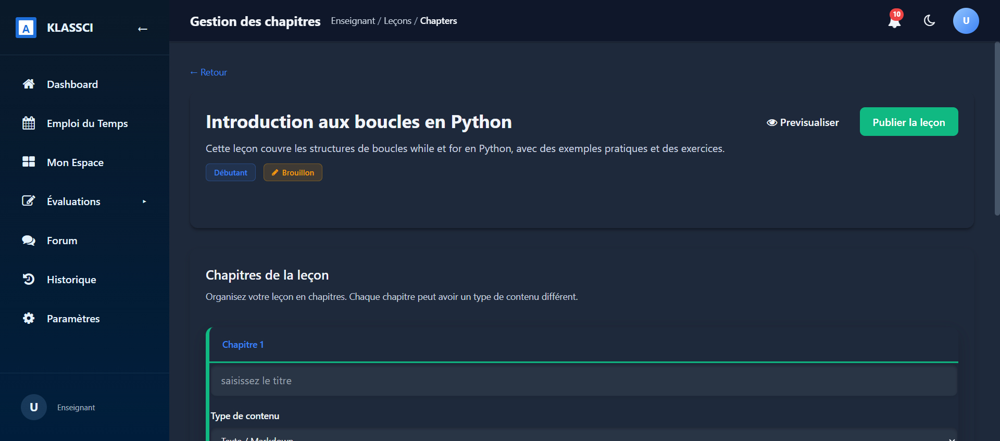
Type : PowerPoint / Word / PDF (upload de fichiers)
Pour les fichiers, une zone de téléchargement apparaît. Vous pouvez :
- Glisser-déposer un fichier depuis votre ordinateur
- Ou cliquer pour sélectionner un fichier
- Taille maximale : 30 Mo (100 Mo pour les vidéos)
- Les PowerPoint sont automatiquement convertis en diapositives navigables
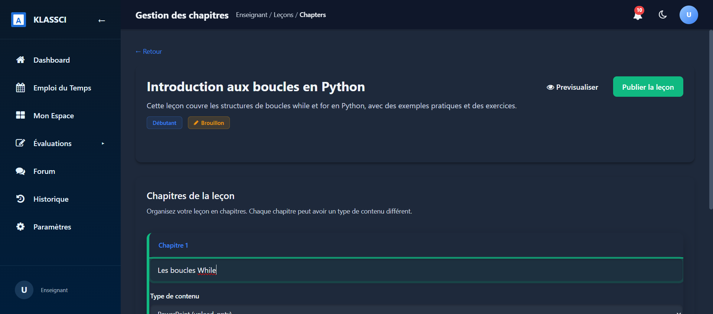
Type : Vidéo (YouTube, Vimeo)
Collez simplement l'URL de la vidéo. L'option « Lecture automatique » permet de lancer la vidéo dès que l'étudiant ouvre le chapitre.
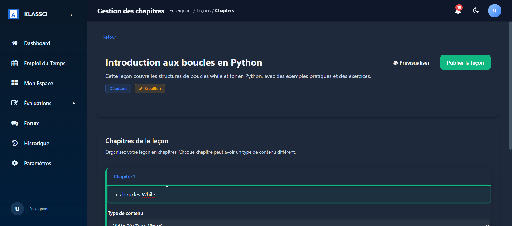
Type : Quiz / Testez vos connaissances
Le type Quiz intègre un questionnaire interactif directement dans le chapitre. Vous pouvez configurer :
- Le titre et la description du quiz
- Le score minimum pour réussir (ex: 70%)
- Le nombre de tentatives autorisées
- Les options : mélanger les questions, mélanger les options, afficher les corrections
- Plusieurs types de questions : QCM (une seule réponse), Réponses multiples, Vrai/Faux
5.7 Organiser plusieurs chapitres
Vous pouvez ajouter autant de chapitres que nécessaire en cliquant sur « + Ajouter un chapitre » en bas de la page. Chaque chapitre peut avoir un type de contenu différent.
- Chapitre 1 : « Introduction » → Type Texte (théorie)
- Chapitre 2 : « Présentation du cours » → Type PowerPoint (diapositives)
- Chapitre 3 : « Tutoriel vidéo » → Type Vidéo (démonstration)
- Chapitre 4 : « Exercices pratiques » → Type PDF (feuille d'exercices)
- Chapitre 5 : « Testez vos connaissances » → Type Quiz (auto-évaluation)
5.8 Publier votre leçon
Une fois tous vos chapitres ajoutés, vous pouvez publier votre leçon :
- Cliquez sur « Publier la leçon » en haut de la page
- Le statut passe de « Brouillon » à « Publiée »
- La leçon devient visible et accessible aux étudiants de la classe
- Vous pouvez dépublier une leçon à tout moment pour la remettre en brouillon
- Les étudiants ne voient que les leçons publiées
- Vous pouvez continuer à modifier une leçon même après publication
- Utilisez « Prévisualiser » pour voir la leçon comme un étudiant avant de publier
5.9 Résumé du processus complet
| Étape | Action | Où |
|---|---|---|
| 1 | Aller dans Mon Espace → Mes Matières | Menu latéral |
| 2 | Cliquer « Gérer la matière » | Carte de la matière |
| 3 | Cliquer « Nouvelle leçon » | Page détails matière |
| 4 | Remplir le formulaire (titre, niveau, description...) | Modal de création |
| 5 | Cliquer « Créer la leçon » | Modal de création |
| 6 | Ajouter des chapitres avec leur contenu | Page gestion chapitres |
| 7 | Cliquer « Publier la leçon » | En-tête page chapitres |
6 Évaluations
La section Évaluations est le centre de gestion de toutes vos évaluations. Elle fusionne automatiquement les évaluations créées dans KLASSCI avec leurs versions en ligne configurées dans le LMS, vous offrant une vue unifiée et complète.
6.1 — Accéder à la liste des évaluations
Dans le menu latéral, cliquez sur Évaluations puis Mes Évaluations. La page affiche toutes les évaluations associées à vos matières et classes.
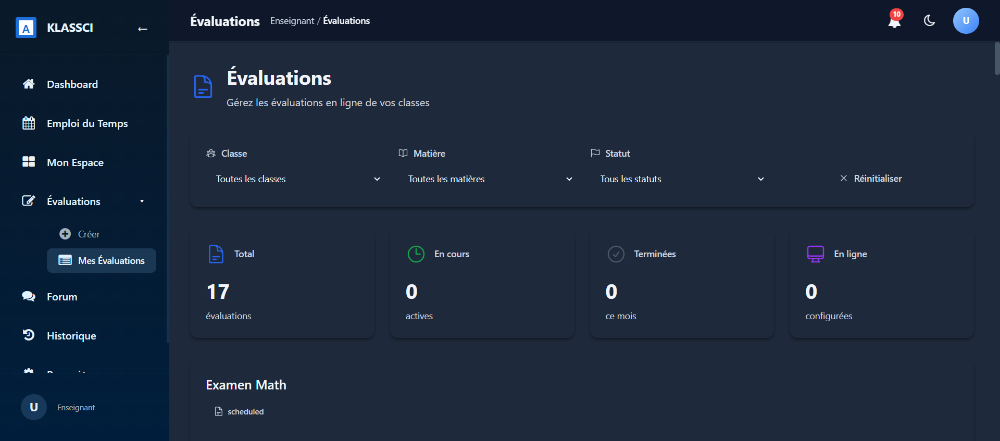
La liste affiche pour chaque évaluation :
- Titre de l'évaluation (tel que défini dans KLASSCI)
- Matière et Classe concernées
- Type : Devoir, Examen, Contrôle continu, Rattrapage, etc.
- Date de l'évaluation
- Coefficient et Barème (sur 20 par défaut)
- Statut : Brouillon, Planifiée, En cours, Terminée
- Badge "En ligne" : indique si une version en ligne a été configurée
- Nombre de questions (si version en ligne créée)
6.2 — Filtrer et rechercher
Utilisez les filtres en haut de page pour affiner la liste :
- Par matière : sélectionnez une matière dans la liste déroulante
- Par classe : filtrez par classe spécifique
- Par statut : Tous, Brouillon, Planifiée, En cours, Terminée
- Recherche textuelle : tapez un mot-clé pour chercher dans les titres
6.3 — Créer une version en ligne
Pour qu'une évaluation KLASSCI devienne passable en ligne par les étudiants, vous devez créer sa version en ligne. C'est l'étape où vous configurez les paramètres du quiz interactif.
- Repérez l'évaluation KLASSCI souhaitée dans la liste (celles qui n'ont pas encore le badge "En ligne")
- Cliquez sur le bouton "Créer version en ligne" (icône +) sur la ligne de l'évaluation
- Une fenêtre modale s'ouvre avec les options de configuration
- Configurez les paramètres (voir détails ci-dessous)
- Cliquez sur "Créer et ajouter des questions"
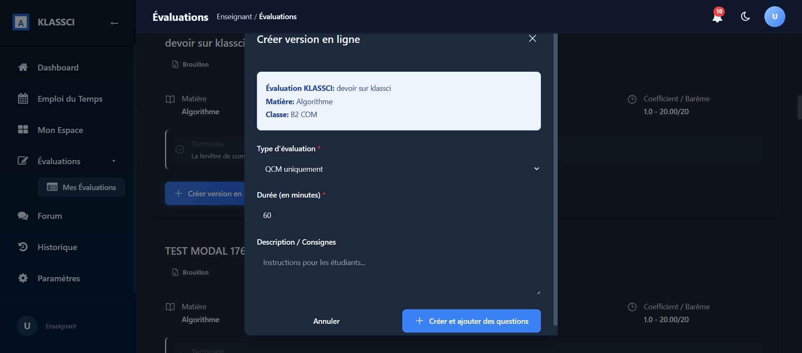
6.3.1 — Options de configuration de la version en ligne
La fenêtre de création propose les paramètres suivants :
| Paramètre | Description | Valeurs possibles |
|---|---|---|
| Type de questions | Détermine quels types de questions seront proposés |
QCM (choix unique uniquement) QCM multiples (choix multiples uniquement) Mixte (tous types de questions) |
| Durée (minutes) | Temps alloué aux étudiants pour compléter l'évaluation | Nombre entier (ex : 30, 45, 60, 90, 120) |
| Description | Instructions ou consignes pour les étudiants (optionnel) | Texte libre |
| Autoriser les reprises | Permet aux étudiants de repasser l'évaluation | Oui / Non |
| Nombre max de tentatives | Limite le nombre de fois qu'un étudiant peut tenter l'évaluation (si reprises autorisées) | 1, 2, 3... (illimité si non défini) |
| Mélanger les questions | L'ordre des questions sera différent pour chaque étudiant | Oui / Non |
| Afficher les résultats | Les étudiants peuvent voir leur score et les corrections après soumission | Oui / Non |
6.4 — Ajouter et modifier les questions
Après la création de la version en ligne, vous êtes redirigé vers l'éditeur de questions. Vous pouvez aussi y accéder à tout moment en cliquant sur "Modifier les questions" (icône crayon) dans la liste.
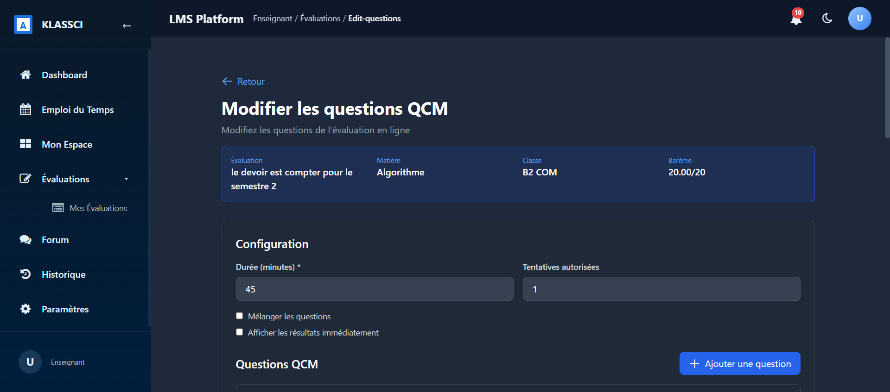
6.4.1 — Types de questions disponibles
Selon le type choisi lors de la création, vous pouvez ajouter différents types de questions :
| Type | Description | Correction |
|---|---|---|
| QCM (Choix unique) | L'étudiant sélectionne une seule réponse parmi plusieurs options. Idéal pour les questions factuelles. | Automatique |
| QCM (Choix multiples) | L'étudiant peut cocher plusieurs réponses. Utile pour les questions à réponses combinées. | Automatique |
| Vrai / Faux | L'étudiant choisit entre Vrai et Faux. Simple et rapide pour vérifier la compréhension. | Automatique |
| Réponse courte | L'étudiant tape une réponse libre (mot, phrase). Nécessite une correction manuelle ou un mot-clé attendu. | Manuelle / Semi-auto |
6.4.2 — Créer une question pas à pas
Pour chaque question ajoutée, remplissez les champs suivants :
- Choisissez le type de question dans le menu déroulant (QCM, Choix multiples, Vrai/Faux, Réponse courte)
- Rédigez l'énoncé de la question dans le champ texte principal
- Définissez le nombre de points attribués à cette question (par défaut : 1 point)
- Pour les QCM : ajoutez les options de réponse (minimum 2). Utilisez le bouton "+" pour ajouter des options supplémentaires et la corbeille pour en supprimer
- Sélectionnez la bonne réponse : cliquez sur le bouton radio (choix unique) ou les cases à cocher (choix multiples) correspondant à la ou les bonnes réponses
- Cliquez sur "Ajouter la question" pour l'intégrer à l'évaluation
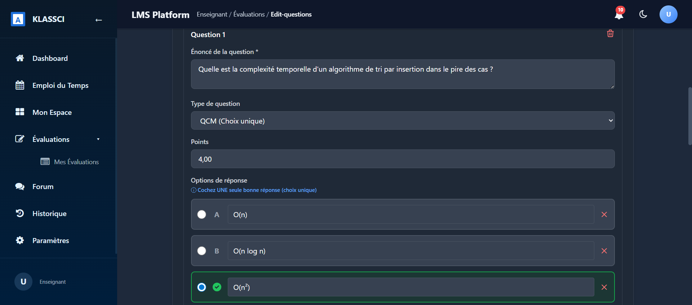
6.4.3 — Gérer les questions existantes
Les questions ajoutées apparaissent dans une liste numérotée sous l'éditeur. Pour chaque question, vous pouvez :
- Modifier : cliquez sur l'icône crayon pour éditer l'énoncé, les options ou la bonne réponse
- Supprimer : cliquez sur l'icône corbeille pour retirer la question
- Réordonner : les questions sont numérotées automatiquement dans l'ordre d'ajout
Lorsque vous avez terminé, cliquez sur "Enregistrer les modifications" pour sauvegarder toutes les questions. Vous serez redirigé vers la liste des évaluations.
6.5 — Publier une évaluation
Une fois les questions ajoutées, vous devez publier l'évaluation pour la rendre visible et accessible aux étudiants.
- Dans la liste des évaluations, repérez l'évaluation avec le badge "En ligne"
- Cliquez sur le bouton "Publier" (icône mégaphone, violet)
- Confirmez la publication dans la boîte de dialogue
- Le statut passe de "Brouillon" à "Planifiée"
- L'évaluation doit contenir au moins une question pour être publiée
- Une évaluation au statut "Terminée" ne peut plus être publiée
- Après publication, les étudiants de la classe concernée peuvent voir et démarrer l'évaluation
6.6 — Prévisualiser une évaluation
Avant de publier, vous pouvez prévisualiser l'évaluation telle qu'elle apparaîtra aux étudiants. Cliquez sur le bouton "Prévisualiser" (icône œil, indigo) pour ouvrir un aperçu en lecture seule des questions et de la mise en page.
6.7 — Cycle de vie d'une évaluation
Comprendre les différents statuts est essentiel pour bien gérer vos évaluations :
| Statut | Signification | Actions possibles |
|---|---|---|
| Brouillon | Version en ligne créée mais pas encore publiée. Invisible pour les étudiants. | Modifier les questions, Publier, Supprimer |
| Planifiée | Publiée et en attente de la date d'évaluation. Visible par les étudiants. | Modifier les questions (si non verrouillée), Dépublier |
| En cours | Des étudiants sont en train de passer l'évaluation. L'évaluation est verrouillée. | Consulter les résultats en temps réel |
| Terminée | La date + durée sont dépassées. Aucun étudiant ne peut plus soumettre de réponses. | Voir les résultats, Synchroniser les notes vers KLASSCI |
6.8 — Verrouillage automatique
Une évaluation est automatiquement verrouillée (non modifiable) dans les cas suivants :
- Au moins un étudiant a déjà soumis une réponse
- L'évaluation a été explicitement verrouillée par un administrateur
Lorsqu'une évaluation est verrouillée, vous ne pouvez plus modifier ni ajouter de questions. Cela garantit l'équité entre les étudiants.
6.9 — Consulter les résultats
Une fois l'évaluation terminée (ou en cours), vous pouvez consulter les résultats détaillés :
- Cliquez sur "Résultats" dans la liste des évaluations
- Vous accédez à la vue détaillée avec la liste de tous les étudiants de la classe
- Pour chaque étudiant : note obtenue, nombre de bonnes réponses, temps passé, statut (soumis, non commencé, en cours)
- Les statistiques globales (moyenne, médiane, taux de réussite) sont affichées en haut

6.10 — Synchroniser les notes vers KLASSCI
Après la correction, vous pouvez synchroniser automatiquement les notes obtenues en ligne vers le système KLASSCI. Cela évite la saisie manuelle des notes.
- Accédez aux résultats de l'évaluation terminée
- Vérifiez les notes attribuées
- Cliquez sur "Synchroniser vers KLASSCI"
- Les notes sont automatiquement transférées dans KLASSCI pour le bulletin
6.11 — Supprimer une version en ligne
Vous pouvez supprimer la version en ligne d'une évaluation si elle n'a pas encore été passée par des étudiants :
- Cliquez sur le bouton "Supprimer" (icône corbeille, rouge)
- Confirmez la suppression dans la boîte de dialogue
- Seule la version en ligne est supprimée — l'évaluation KLASSCI reste intacte
6.12 — Récapitulatif des boutons d'action
| Bouton | Couleur | Action | Condition |
|---|---|---|---|
| Créer version en ligne | Vert | Ouvre la modale de configuration | Aucune version en ligne existante |
| Modifier les questions | Orange | Ouvre l'éditeur de questions | Version en ligne existante |
| Publier | Violet | Rend l'évaluation visible aux étudiants | Au moins 1 question, pas terminée |
| Prévisualiser | Indigo | Aperçu de l'évaluation (vue étudiant) | Version en ligne existante |
| Résultats | Bleu | Affiche les résultats par classe | Version en ligne publiée |
| Supprimer | Rouge | Supprime la version en ligne | Pas de soumissions existantes |
6.13 — Bonnes pratiques
- Variez les types de questions : utilisez le mode Mixte pour combiner QCM, Vrai/Faux et réponses courtes
- Activez le mélange des questions : empêche la copie entre étudiants
- Calibrez la durée : prévoyez environ 1 à 2 minutes par question QCM, plus pour les réponses courtes
- Testez avec la prévisualisation : vérifiez l'apparence et la clarté des questions avant de publier
- Limitez les tentatives : pour un examen formel, autorisez une seule tentative ; pour un exercice d'entraînement, permettez plusieurs essais
- Publiez en avance : les étudiants pourront voir que l'évaluation est planifiée et se préparer
- Synchronisez après vérification : vérifiez toujours les notes avant la synchronisation vers KLASSCI
7 Forum
Le Forum permet les échanges entre enseignants et étudiants. C'est un espace de discussion et de partage.
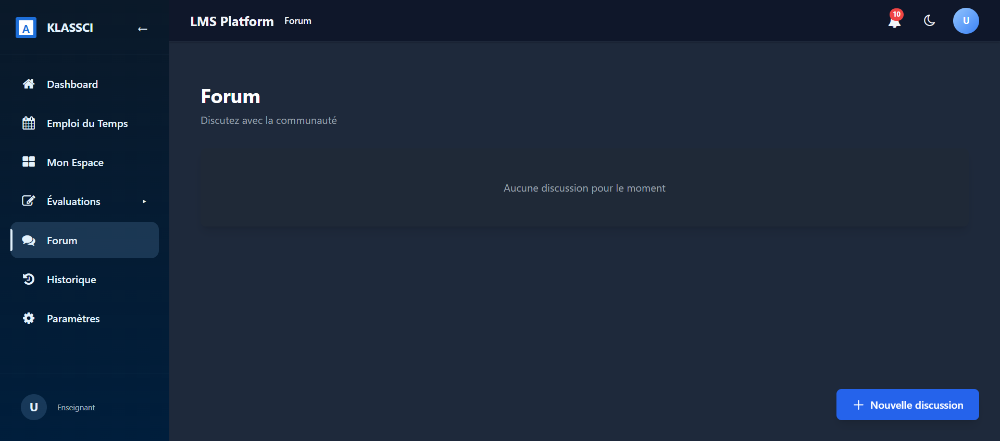
Vous pouvez :
- Créer de nouveaux sujets de discussion
- Répondre aux questions des étudiants
- Partager des ressources complémentaires
8 Historique des Séances
La page Historique des Séances vous permet de consulter toutes vos séances passées, leurs statistiques de présence et de gérer l'historique complet de vos cours en visioconférence.
8.1 Filtres temporels
En haut de la page, 4 boutons de filtre vous permettent d'affiner la période affichée :
| Filtre | Description |
|---|---|
| Aujourd'hui | Séances du jour uniquement |
| Cette semaine | Séances de la semaine en cours |
| Ce mois | Séances du mois en cours (vue par défaut) |
| Personnalisé | Choisissez une plage de dates libre |
Une barre de recherche permet également de filtrer par matière, enseignant ou nom de séance.
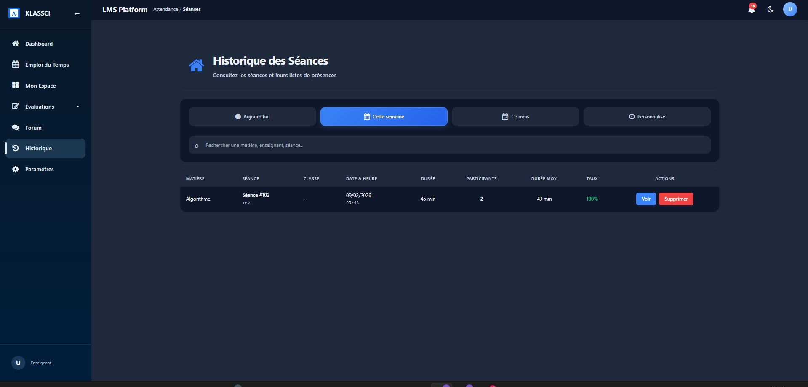
8.2 Tableau des séances
Le tableau principal affiche les colonnes suivantes :
| Colonne | Description |
|---|---|
| Matière | Nom de la matière concernée (ex: Algorithme, Anglais) |
| Séance | Numéro et identifiant de la séance (ex: Séance #102) |
| Classe | Classe concernée par la séance |
| Date & Heure | Date et heure de début de la séance |
| Durée | Durée totale de la séance en minutes |
| Participants | Nombre d'étudiants ayant participé |
| Durée Moy. | Durée moyenne de connexion des participants |
| Taux | Taux de présence effective (en vert si 100%, en rouge si 0%) |
| Actions | Boutons « Voir » et « Supprimer » |
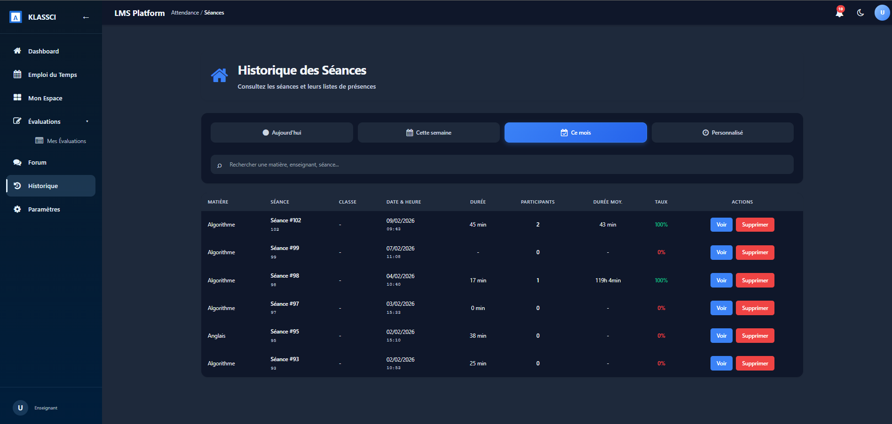
8.3 Actions disponibles
Pour chaque séance dans l'historique, deux actions sont possibles :
- Voir (bouton bleu) : Affiche le détail de la séance avec la liste complète des participants, leurs heures de connexion/déconnexion, la durée individuelle et le statut de présence (Présent, Partiel, Insuffisant, Absent)
- Supprimer (bouton rouge) : Supprime la séance de l'historique. Attention : cette action ne peut pas être effectuée si la visioconférence est encore en cours.
8.4 Comprendre les statistiques
- Taux de présence = (participants ayant été connectés plus de 3 minutes / total des participants non-observateurs) × 100
- Durée moyenne = moyenne des durées de connexion de tous les participants
- Les observateurs (comptes de test, admins) sont exclus des statistiques
- Un taux à 100% signifie que tous les étudiants ont été suffisamment présents
- Un taux à 0% signifie qu'aucun participant n'a dépassé le seuil de 3 minutes
8.5 Détails d'une séance (bouton Voir)
En cliquant sur « Voir », vous accédez à une page détaillée contenant :
- Informations de la séance : enseignant, heure de début/fin, durée totale, statut
- Statistiques globales : total participants, durée moyenne, taux de présence
- Liste des participants avec pour chacun :
- Nom et email
- Heure d'arrivée et de départ
- Durée de connexion
- Statut de présence (badge coloré : vert = Présent, orange = Partiel, rouge = Insuffisant/Absent)
- Pourcentage de participation
9 Paramètres
Accédez aux paramètres de votre compte pour gérer votre profil et vos préférences.
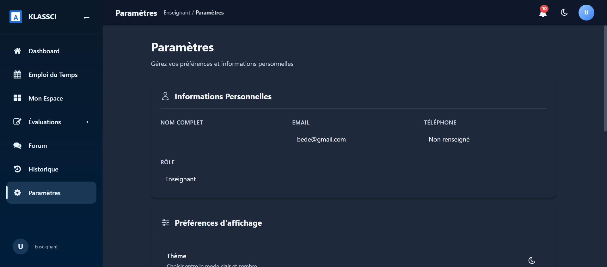
Depuis cette page, vous pouvez :
- Modifier vos informations personnelles
- Changer votre mot de passe
- Configurer vos préférences de notification